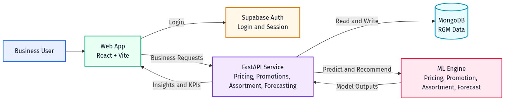
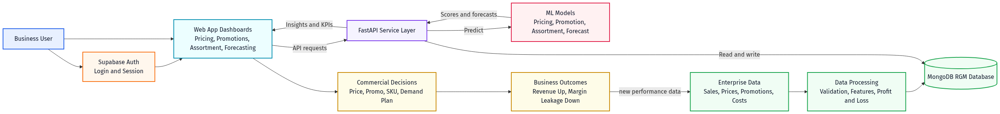

This platform helps enterprise commercial teams improve pricing quality, promotion effectiveness, assortment decisions, and demand planning using machine learning and financial analytics in one workflow.
| Business problem | Current risk | Platform response |
|---|---|---|
| Pricing decisions are reactive | Revenue or volume optimized but profit missed | ML-assisted pricing recommendations with revenue/profit/loss impact |
| Promotions focus only on lift | Weak ROI, high cannibalization | Scenario simulation with predicted ROI, cannibalization, incremental profit/loss |
| Assortment decisions are subjective | Shelf/menu space wasted on weak SKUs | Data-driven add/keep/delist/review recommendations |
| Forecasting is demand-only | Financial planning blind spots | Demand forecast translated to projected revenue/profit/loss |
| Module | User view | Decision output |
|---|---|---|
| Executive Overview | KPI cards + revenue by category | Commercial health snapshot |
| Pricing | Price table, elasticity, competitor view | Increase/decrease/hold with projected financial impact |
| Promotions | History, upcoming events, simulator | Best discount-duration-channel setup |
| Assortment | SKU/channel performance matrix | Add/keep/delist/review with confidence |
| Forecasting | Actual vs predicted demand, trend, seasonality | Forward demand and financial projection |
| Domain | ML component | Core output |
|---|---|---|
| Pricing | ml_pricing.py | Recommended price and projected revenue/profit/loss |
| Promotions | ml_promotion.py | Predicted ROI, lift, cannibalization, incremental P&L |
| Assortment | ml_assortment.py | SKU recommendation class |
| Forecasting | ml_forecast.py | Future demand time-series (ML-only generation) |
| Core collection | Purpose |
|---|---|
products | SKU context: cost, price, competitor, channel, elasticity |
pricing_records | Historical price behavior and profit/loss |
promotions | Campaign setup and historical outcomes |
event_calendar | Upcoming events linked with historical references |
assortment_data | SKU/channel performance for mix optimization |
demand_forecasts | Historical + projected demand and financial projection |
Demo data snapshot (February 14, 2026): 8 products, 18 pricing records, 11 promotions, 8 events, 11 assortment rows, 19 forecast rows.
| Layer | Technology |
|---|---|
| Frontend | React 18, TypeScript, Vite, Tailwind, shadcn, Recharts |
| API | FastAPI (Python) on port 4000 |
| ML | scikit-learn models (RandomForest, Ridge) |
| Database | MongoDB |
| Identity | Supabase Auth |


| KPI | Business meaning |
|---|---|
| Revenue growth (%) | Topline value creation |
| Net profit growth (%) | Real profitability improvement |
| Margin leakage reduction (%) | Control of avoidable commercial loss |
| Promotion ROI uplift | Campaign quality improvement |
| Forecast error (MAPE/RMSE) | Planning reliability |
| Decision cycle time | Commercial operating speed |
Ready today: end-to-end UI, FastAPI + Mongo integration, ML modules, profit/loss-enriched seed data, and client-ready architecture/workflow visuals.
Next phase: ERP/POS integration, governance workflow, stronger model monitoring, and production rollout controls.
Printing tip: open this file in a browser and use Ctrl+P (Save as PDF) for client handouts.